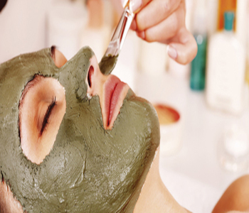
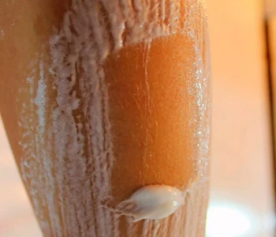
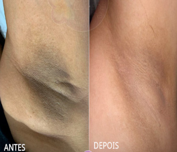
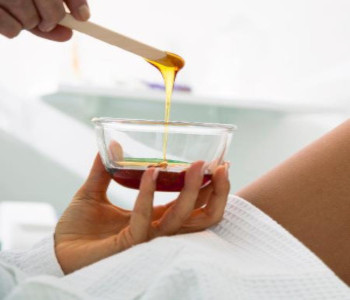
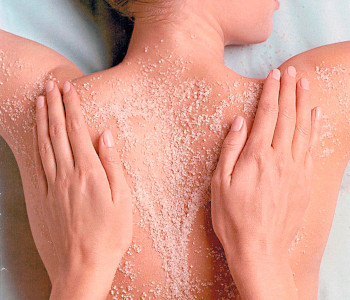
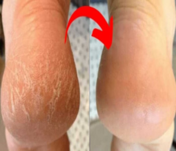
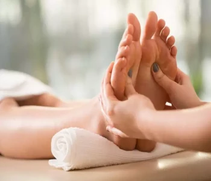

Argilo Terapia
É um tratamento estético alternativo que faz uso de produtos à
base de argila com o objetivo de promover a saúde da pele e dos cabelos,
Benefícios: alivia a tensão muscular, ativa a circulação
sanguínea, colabora com a suavização das machas na pele, regenera os tecidos,
desintoxica, e elimina o estresse

Banho de Lua
Também conhecido como banho dourado, é um procedimento estético muito realizado
no verão com o objetivo de clarear os pelos, tornando-os menos visíveis a olho
nu.
Benefícios: é capaz de hidratar e nutrir a pele, além de
remover as células mortas presente na pele, melhorando o aspecto da pele,
deixando-a mais macia e valorizando a pele bronzeada do verão.
Clareamento de Virilha e Axilas

Clareamento de Virilha e Axilas
O clareamento de axilas é um tratamento estético realizado nas axilas que
acabam escurecendo devido a diversos motivos. É comum que o escurecimento das
axilas seja responsável por mexer com a autoestima, sendo assim, o procedimento
que deixa essa região clareada acaba sendo a solução para ambos os problemas.
Benefícios: Levanta a autoestima, o tratamento é eficaz, desta
forma, quem passa pelo procedimento consegue o resultado esperado.

Depilação
A cera possui a finalidade de remover os pelos de modo semi-permanente, pois
ela remove os pelos diretamente da raiz, fazendo com que eles demorem mais
tempo para crescer.
Benefícios: Pele lisa, Não escurece a pele, Pelos custam a
crescer, Pelos mais finos
Esfoliação Corporal e Hidratação

Esfoliação Corporal e Hidratação
Esfoliar é o processo de remoção de células mortas da superfície da pele. Ou
seja, o processo de esfoliar a pele estimula a renovação celular, se você não
remove essas células mortas, além da pele ficar opaca e sem vitalidade, isso
tudo pode resultar em manchas, poros entupidos, textura irregular, entre
outros.
Benefícios: Remove as células mortas, deixando a pele mais
macia e hidratada.
Massagem Bronzeadora
A massagem é realizada com as duas mãos, utilizando as luvas aplicadoras de
autobronzeador e conta com todo um ritual de relaxamento. São usados todos os
encantamentos de uma massagem como um escalda pés, musicoterapia, aromaterapia
e também temos a cromoterapia da sala.
Benefícios: Com a massagem bronzeadora você tem todas as
vantagens de uma massagem relaxante e ainda sai com a pele bronzeada! Essa
técnica pigmenta a superfície da pele, dando a impressão de uma cor mais
morena.

Plástica dos Pés
Remoção de calos seguida de uma esfoliação, aplicação de parafina e hidratação
dos pés, ajudando a aliviar dores e promover bem estar.
Benefícios: higienização, esfoliação, alívio de dores e do
estresse, estimula a circulação, alívio de calosidades, pé rachado, rachaduras
ou descamação dos pés e relaxamento imediato.

Refléxologia
Terapia complementar, e consiste na aplicação de pressão em pontos
do pé, para equilibrar a energia do corpo e evitar o surgimento de doenças e
problemas de saúde.
Benefícios: proporciona bem estar e relaxamento, umas vez que
leva à liberação de toxinas do organismo, sendo utilizada para prevenir e
tratar doenças e outras condições de saúde como insônia, estresse, problemas de
circulação sanguínea, problemas hormonais, prisão de ventre, labirintite,
cálculo renal, asma, hipertensão, enxaqueca, dores nas costas, e sinusite, por
exemplo.